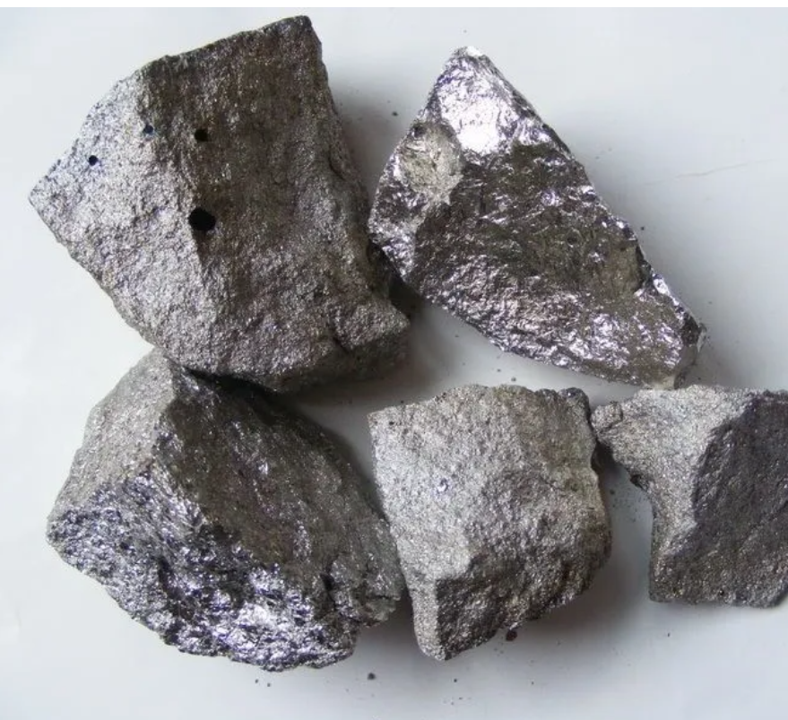
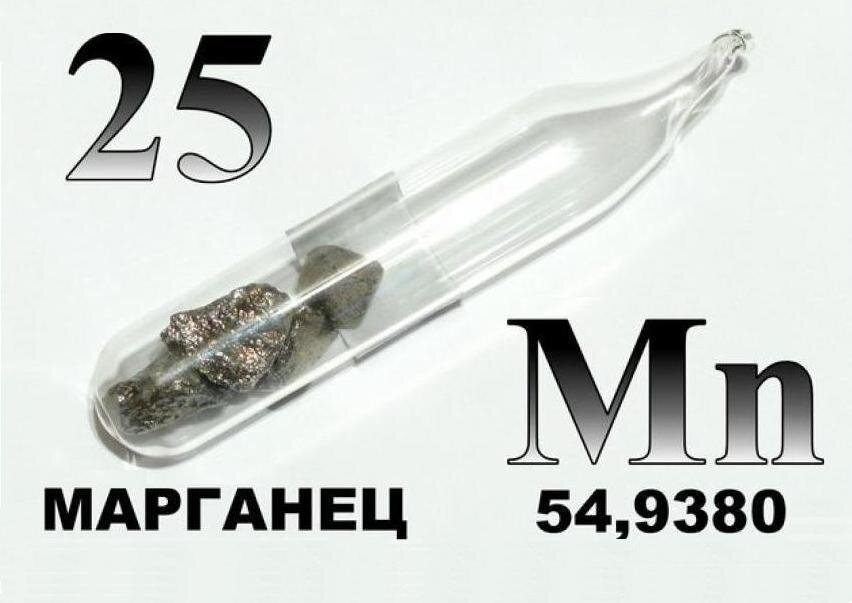

Маргаец
Ма́рганец (химический символ — Mn, от лат. Manganum) — химический элемент 7-й группы (по устаревшей классификации — побочной подгруппы седьмой группы, VIIB), четвёртого периода периодической системы химических элементов Д. И. Менделеева, с атомным номером 25.Простое вещество марганец — это твёрдый, но одновременно с этим, хрупкий переходный металл серебристо-белого цвета. Относится к цветным металлам.

Соединения марганца были известны задолго до открытия этого элемента. В Древнем Египте самый распространённый минерал марганца – пиролюзит применяли при производстве стекла и керамических изделий. Долгое время пиролюзит называли чёрной магнезией и считали разновидностью магнитного железняка (магнетита). В 1774 г. К. В. Шееле показал, что пиролюзит – соединение неизвестного металла, а другой шведский химик Ю. Ган, нагревая минерал со смесью древесного угля и нефтяного масла, выделил металлический марганец. Образец содержал большое количество примесей; высокочистый марганец получен в 1930-х гг. электролизом растворов солей марганца.
Около 90% получаемого марганца используется в чёрной металлургии для легирования, раскисления и десульфурации стали (в среднем расходуется около 8–9 кг марганца на 1 т выплавляемой стали). Марганец применяется также при выплавке различных сплавов, не содержащих железа (марганцовистой бронзы, марганцовистой латуни, манганина, магниевых и алюминиевых сплавов), а также для создания на металлических поверхностях антикоррозионных покрытий. Соединения марганца применяют как антидетонаторы моторного топлива, при изготовлении гальванических элементов, трансформаторов и других радиотехнических устройств, стекла, эмали и глазури, красителей, сиккативов, катализаторов, высокотемпературных полупроводниковых материалов, микроудобрений.

Соединения марганца применяют и при изготовлении гальванических элементов; в производстве стекла и в керамической промышленности; в красильной и полиграфической промышленности, в сельском хозяйстве (см. Микроудобрения) и т. д.
Среднее содержание марганца в земной коре 0,1 % по массе. В свободном виде в природе не встречается. Известно более 300 минералов, из которых около 10 имеют промышленное значение. В первичных породах марганец входит в состав силикатов и гранитов (среднее содержание 0,06 % по массе). Наиболее важны в промышленности вторичные месторождения оксидов и карбонатов – минералы пиролюзит, псиломелан, манганит, браунит, гаусманит, родохрозит и др. (см. статьи Марганцевые горные породы, Марганцевые руды). При разрушении и выветривании первичных пород происходит вымывание дисперсных частиц оксидов марганца, железа, алюминия в моря, озёра и океаны, где они образуют железомарганцевые конкреции, являющиеся перспективным источником марганца (содержат 15–30 % марганца). В биосфере марганец энергично мигрирует в восстановительных условиях и малоподвижен в окислительной среде. Марганец наиболее подвижен в кислых водах тундры и лесных ландшафтов, где он находится в форме Mn2+; культурные растения здесь часто страдают от избытка марганца. В сухих степях и пустынях в условиях щелочной окислительной среды марганец малоподвижен и культурные расте